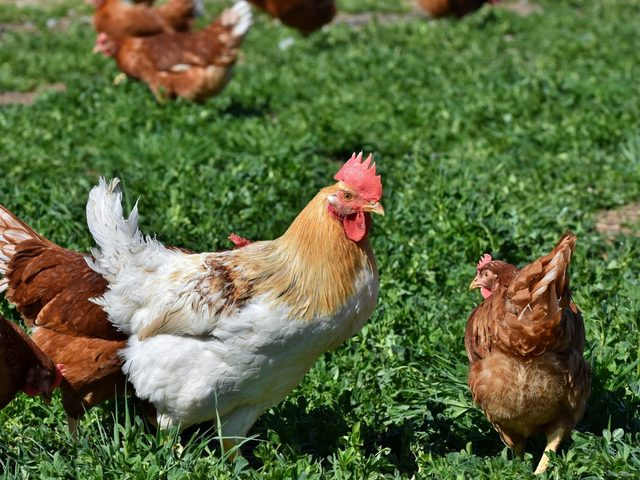
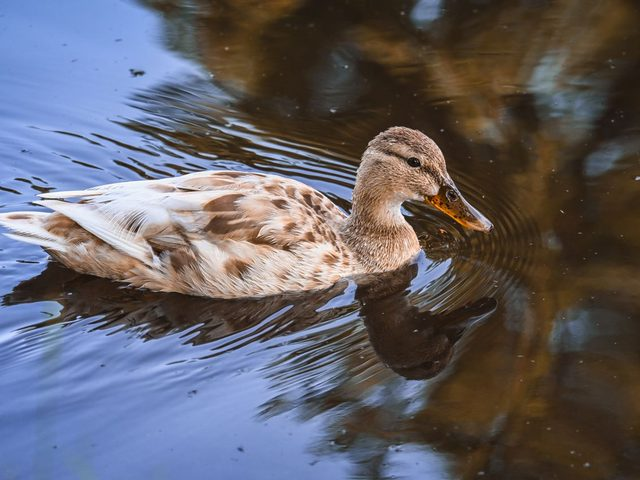
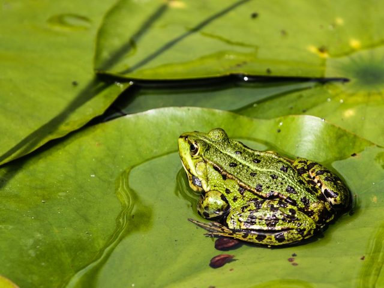
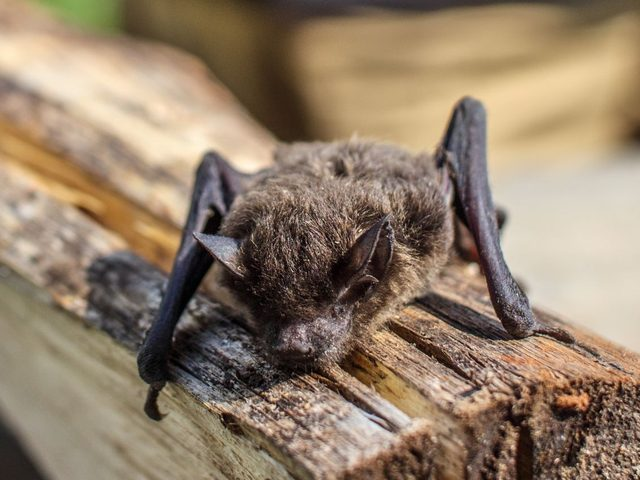

VOCABULARY · 主題 2000 字 UNIT 26
Animals & insects．動物與昆蟲
農場、森林、動物園裡的動物，還有小昆蟲，共 38 個字。注意特別的複數：mouse → mice、goose → geese、sheep、fish 單複數同形。
共 38 個單字．點 🔊 聽發音

1animaln.
動物
There are many animals on the farm.農場上有很多動物。

2bearn.
熊
teddy bear 泰迪熊
The bear is looking for food in the forest.那隻熊在森林裡找食物。

3catn.
貓
My cat likes to sleep in the sun.我的貓喜歡在陽光下睡覺。

4chickenn.
雞；雞肉
雞肉不可數
Grandma keeps some chickens in the yard.奶奶在院子裡養了幾隻雞。

5cown.
母牛；乳牛
We get milk from cows.我們從乳牛身上得到牛奶。

6dogn.
狗
Our dog barks when someone is at the door.有人在門口時，我們的狗會叫。

7duckn.
鴨子；鴨肉
Some ducks are swimming in the pond.有幾隻鴨子在池塘裡游泳。
8elephantn.
大象
an elephant（母音開頭用 an）
An elephant has a long nose.大象有長長的鼻子。

9foxn.
狐狸
複數 foxes
The fox runs very fast.狐狸跑得很快。

10frogn.
青蛙
A frog is sitting on the leaf.一隻青蛙坐在葉子上。

11goatn.
山羊
sheep 是綿羊
The goats are eating grass on the hill.山羊在小山上吃草。
12goosen.
鵝；鵝肉
複數 geese
The goose is swimming on the lake.那隻鵝在湖上游。

13henn.
母雞
公雞 rooster
The hen lays an egg every day.那隻母雞每天下一顆蛋。
14horsen.
馬
ride a horse 騎馬
Can you ride a horse?你會騎馬嗎？

15lionn.
獅子
The lion is the king of animals.獅子是萬獸之王。

16monkeyn.
猴子
複數 monkeys
The monkey is eating a banana.猴子正在吃香蕉。

17mousen.
老鼠；（電腦）滑鼠
複數 mice
The cat is chasing a mouse.貓正在追一隻老鼠。

18petn.
寵物
keep a pet 養寵物
Do you have any pets at home?你家裡有養寵物嗎？

19pign.
豬
The pigs are playing in the mud.豬在泥巴裡玩。

20puppyn.
小狗
複數 puppies
Our dog just had three puppies.我們的狗剛生了三隻小狗。

21rabbitn.
兔子
The rabbit has long ears.兔子有長長的耳朵。

22ratn.
老鼠（比 mouse 大）
A rat is looking for food in the trash.一隻老鼠在垃圾裡找食物。

23sheepn.
綿羊
單複數同形：one sheep, two sheep
There are many sheep on the farm.農場上有很多綿羊。

24tigern.
老虎
The tiger is taking care of its baby.老虎正在照顧牠的寶寶。

25zebran.
斑馬
Zebras have black and white stripes.斑馬身上有黑白條紋。

26insectn.
昆蟲
昆蟲有六隻腳
An insect has six legs.昆蟲有六隻腳。

27antn.
螞蟻
an ant
The ants are carrying food home.螞蟻正把食物搬回家。

28batn.
蝙蝠；球棒
baseball bat 棒球棒
Bats sleep in the day and fly at night.蝙蝠白天睡覺、晚上飛。

29been.
蜜蜂
busy as a bee 像蜜蜂一樣忙
A bee is flying from flower to flower.一隻蜜蜂在花朵間飛來飛去。

30birdn.
鳥
The bird is singing in the tree.鳥在樹上唱歌。

31bugn.
小蟲
There is a bug on my arm!我的手臂上有一隻小蟲！

32butterflyn.
蝴蝶
複數 butterflies
The butterfly has beautiful wings.這隻蝴蝶有美麗的翅膀。

33snaken.
蛇
Be careful! There is a snake in the grass.小心！草裡有一條蛇。

34spidern.
蜘蛛
spider web 蜘蛛網
The spider is making a web.蜘蛛正在結網。

35fishn./v.
魚；釣魚
單複數同形；go fishing 去釣魚
There are many fish in the pond.池塘裡有很多魚。
36turtlen.
烏龜；海龜
The turtle moves very slowly.烏龜移動得很慢。

37bitev./n.
咬；一口
三態 bite／bit／bitten
Take a bite of this apple.咬一口這顆蘋果。
38tailn.
尾巴
The dog is wagging its tail.狗正在搖尾巴。
FOCUS
特別的複數
| 單數 | 複數 | 說明 |
|---|---|---|
| mouse | mice | 不規則變化 |
| goose | geese | oo → ee |
| sheep | sheep | 單複數同形 |
| fish | fish | 單複數同形（不同種類的魚才用 fishes） |
| fox | foxes | -x 加 -es |
| puppy／butterfly | puppies／butterflies | 子音＋y → ies |
| monkey | monkeys | 母音＋y → 直接加 s |
two mice、three geese、many sheep、a lot of fish。
FOCUS
動物和牠的叫聲、寶寶
| 動物 | 叫聲 | 寶寶 |
|---|---|---|
| dog 狗 | bark 汪汪叫 | puppy 小狗 |
| cat 貓 | meow 喵喵叫 | kitten 小貓 |
| cow 牛 | moo 哞哞叫 | calf 小牛 |
| duck 鴨 | quack 呱呱叫 | duckling 小鴨 |
| hen 母雞 | cluck 咯咯叫 | chick 小雞 |
chicken 可以是雞（可數）或雞肉（不可數）：I like chicken. 我喜歡吃雞肉。
FOCUS
和動物有關的常用說法
| 說法 | 意思 |
|---|---|
| busy as a bee | 非常忙碌 |
| eat like a bird | 吃得很少 |
| keep a pet | 養寵物 |
| take a bite | 咬一口 |
| wag its tail | 搖尾巴 |
bite 三態：bite／bit／bitten。The dog bit my leg. 狗咬了我的腳。